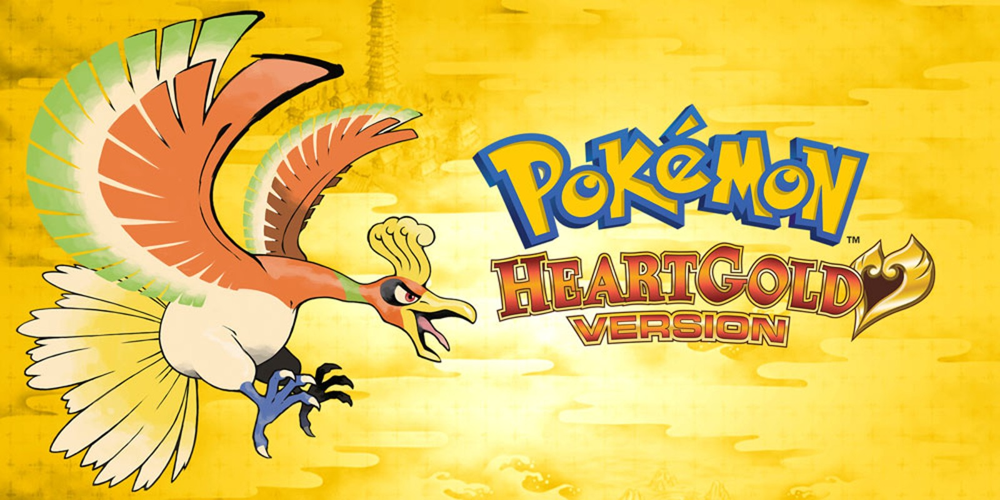
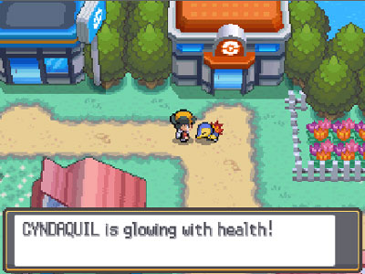
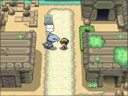

About me and why I made this website
I made this website as an assignment in my Web technology class, and I did it because
I've played so much pokemon in the past and owned every game up to date. It has been a really
fun experience, and one could say that this video game franchise is one of my best childhood
memories. It all started with me being interested in owning Pokemon cards, and collecting them
and one day, I got an Gameboy Advance with Pokemon Gold in my very early days, and I have been
playing the pokemon games ever since.
My favourite pokemon game

This game is my all time favourite pokemon game, and maybe even my all time favourite video game. The reasoning for this
is because this game includes 16 gyms instead of 8, and the story line is much greater. It is originally an continuation
of Pokemon Red, Blue and Yellow, 3 years after the happenings of team rocket and such. Pokemon Gold and Silver was released in
the 6th of april 2001, and the remake, Pokemon Heart Gold and Soul Silver was released in March 26th of 2010. What I really love
about the remake is how beautiful the scenery is and you can also have the first pokemon in your party follow you around.


Because you get to explore both the Johto and the Kanto Region, there is a lot more to do than in the previous
games, and you get to re-explore Red, Blue and Yellow in a much finer fashion with updated graphics and stronger
pokemon trainers.